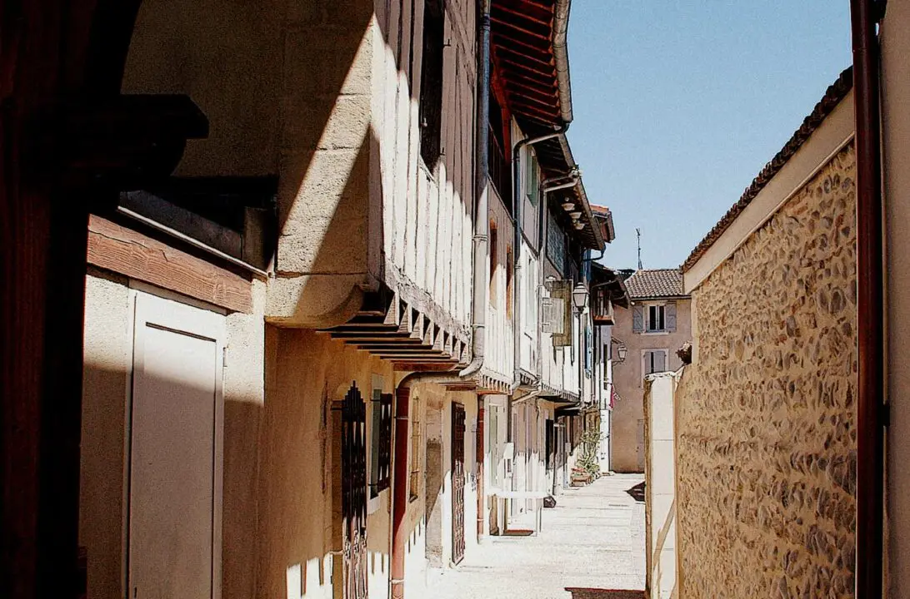

Cette rue, l'une des plus anciennes de la ville, a récemment été nommée rue Louise Thèbe, du nom d'une Martraise reconnue "Juste pour la Nation" pour avoir sauvé des enfants juifs pendant la seconde guerre mondiale.
Quel nom cette rue a-t-elle porté? ?